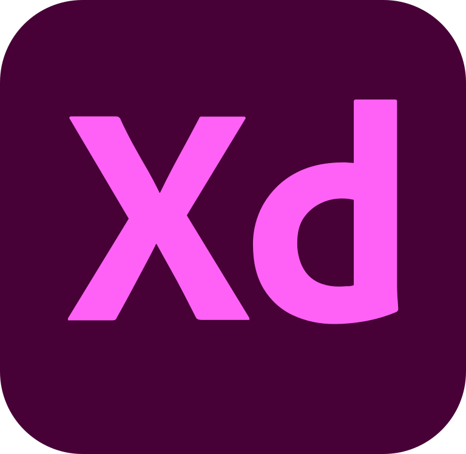
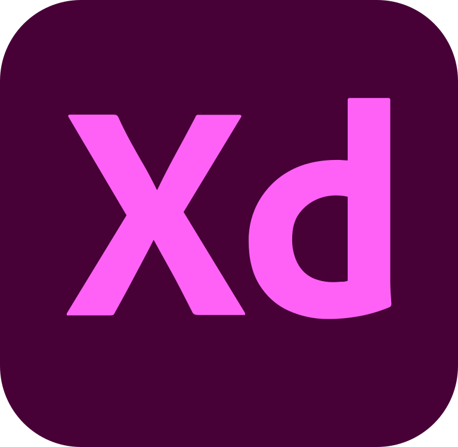

안녕하세요.
디자이너 이아름입니다.
이아름
1994.03.14
010.9694.6396
ariades@naver.com
leeareum.co.kr
Education.
@2019.02 중앙대학교 졸업
사회과학대학 공공인재학부 행정학 전공
@2019.02 중앙대학교 졸업
디자인학부 시각디자인 전공(복수전공)
Design Skills.

 


Experience.
@2013.06-2014.04
TEDxCAU 기술팀 활동
@2017.12-2019.01
(주)리얼바이트 디자인 인턴 (1년 1개월)
@2019.02-2021.04
콴텍(주) 디자인팀 사원 (2년 2개월)
License.
@2018.02
GTQ그래픽기술자격 1급
@2018.04
컴퓨터그래픽스 운용기능사
Q. 디자이너 이아름은 어떤 사람인가요?
계획을 세우고 그에 맞춰 일을 진행하며, 결과물을 만들어내는 과정 자체를 좋아하는 사람입니다. 만들어진 결과물로 피드백을 받고, 다시 수정하는 시스템에 성취감을 느낍니다.
Q. 왜 디자인을 시작하게 되었는지.
그림그리는 것을 좋아하기도 했지만, 동아리 활동을 하면서 사람들이 좋아할만한 것, 사람들이 원하는 것들에 대해 생각하다보니 자연스럽게 디자인에 매력을 느꼈어요. 그중에서도 빠르게 변화하면서 우리 생활 속에 자연스럽게 녹아드는 UX/UI 디자인이 특히 제게 매력적으로 다가왔습니다. 단순히 예쁜 것으로 그치는 것이 아니라, 사용자의 입장에서 쉽고 편리하게 활용할 수 있게 하는 것이 목적이기 때문에 일러한 점이 제가 생각하던 디자인의 모습과 일치하여 디자인을 복수전공하는 계기가 되었습니다.
Q. 어떤 가치관을 지니고 살아가는지.
저는 스콘을 닮고 싶습니다. 단단하고 바삭한 외면과 같이 야무지고 믿음직한 사람, 그리고 보들보들하고 촉촉한 내면처럼 말랑하고 유연하게 사고하는 사람이 되고자 합니다. 사람들에게 즐거움과 행복을 줄 수 있는 디자인을 하는 것을 목표로 하고 있습니다.
Q. 롤모델이 있다면?
롤모델은 신동엽 씨입니다. 조근조근 느린 호흡으로 천천히 이해하기 쉬우면서도 위트있게 마무리하는 신동엽 씨의 진행을 좋아합니다. 이러한 능력은 제가 꿈꾸는 디자인에도 접목시킬 수 있는 훌륭한 장점이라고 생각합니다. 누구나 좋아하고, 한 눈에 이해하기 쉬우며 웃음을 줄 수 있는 디자인을 꿈꾸기 때문입니다. 신동엽 씨는 TV동물농장을 20년, 안녕하세요는 9년으로 오랜 기간동안 프로그램을 이끌어왔습니다. 최근에는 놀라운 토요일, 미운우리새끼 등의 프로그램도 맡고 있는데, 주목할만한 점은 모두 스튜디오 방송이라는 점입니다. 자신이 잘 하는 것(스튜디오 방송)을 정확하게 이해하고, 장점을 극대화하여 해당 분야에서 1인자로 자리매김하는 신동엽 씨를 보면서 배울 점이 많다고 느꼈습니다.
Q. 그렇다면 자신의 장점은?
그림그리는 것을 좋아하기도 했지만, 동아리 활동을 하면서 사람들이 좋아할만한 것, 사람들이 원하는 것들에 대해 생각하다보니 자연스럽게 디자인에 매력을 느꼈습니다. 그중에서도 빠르게 변화하면서 우리 생활 속에 자연스럽게 녹아드는 UX/UI 디자인이 특히 제게 매력적으로 다가왔습니다. 단순히 예쁜 것으로 그치는 것이 아니라, 사용자의 입장에서 쉽고 편리하게 활용할 수 있게 하는 것이 목적이기 때문에 일러한 점이 제가 생각하던 디자인의 모습과 일치하여 디자인을 복수전공하는 계기가 되었습니다.